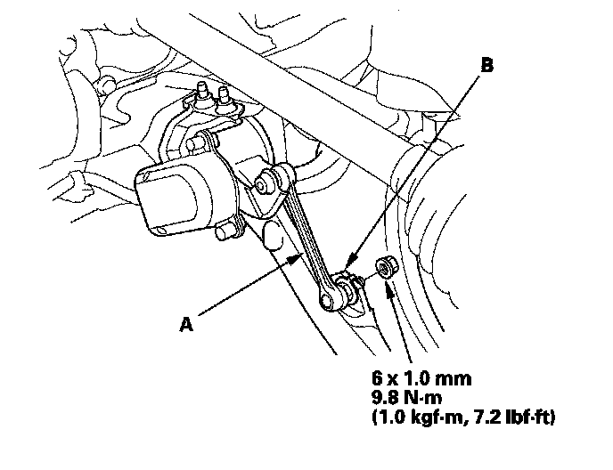
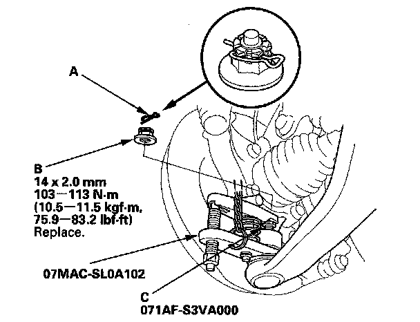
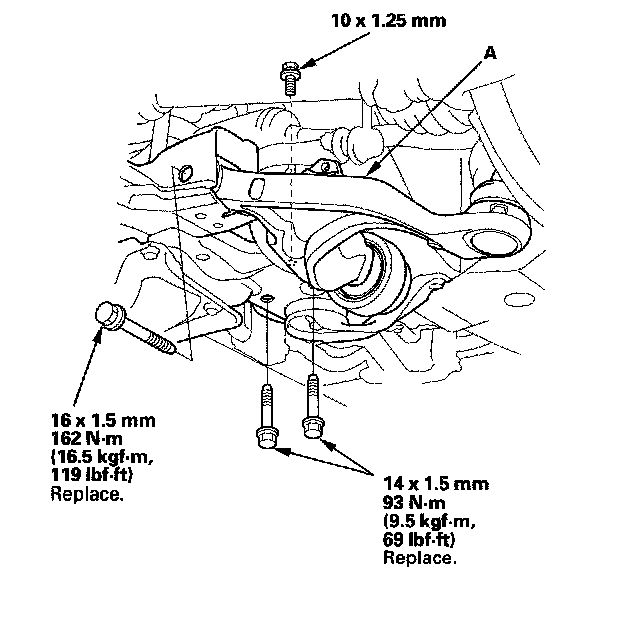
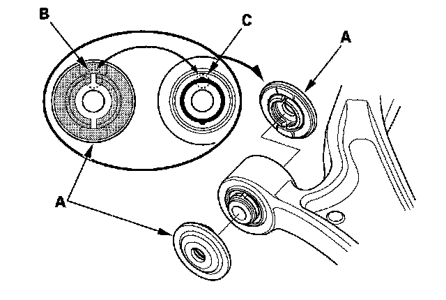
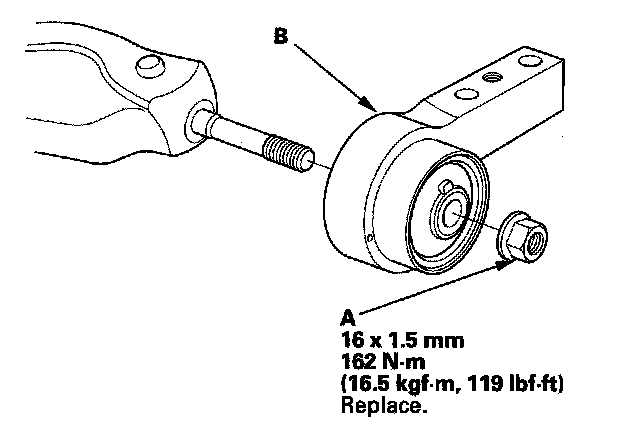
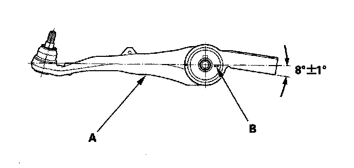

Front Suspension
Lower Arm Removal/InstallationSpecial Tools Required
^ Ball joint remover, 32 mm 07MAC-SL0A102
^ Ball joint thread protector, 14 mm 071AF-S3VA000
Removal/Installation
1. Raise the front of the vehicle, and support it with safety stands in the proper locations.
2. Remove the front wheel.
3. With active damper system: Remove the suspension stroke sensor (A) from the lower arm (B).

4. Remove the lock pin (A) from the lower arm ball joint, then remove the nut (B).
NOTE: During installation, install the lock pin after tightening new castle nut.

5. Install the ball joint thread protector (C).
6. Disconnect the lower ball joint from the knuckle using the ball joint remover then remove the lower ball joint.
7. Remove the lower arm mounting bolt and the 10 mm flange bolt, then remove the lower arm (A) from the front subframe.
NOTE: Use the new mounting bolts during reassembly.

8. Remove the lower arm stops (A).
NOTE: During installation, align the slot (B) on the lower arm stop with the lug portion (C) on the lower arm bushing.

9. Install the lower arm in the reverse order of removal, and note these items:
^ Be careful not to damage the ball joint boot when installing the knuckle.
^ Tighten all mounting hardware to the specified torque values.
^ Before connecting the lower ball joint to the knuckle, degrease the threaded section and tapered portion of the ball joint pin, the knuckle connecting hole, the threaded section, and mating surface of the castle nut.
^ First install all the components, and lightly tighten the bolts and nuts, then raise the suspension to load it with the vehicle's weight before fully tightening to the specified torque values.
^ Torque the castle nut to the lower torque specification, then tighten it only far enough to align the slot with the ball joint pin hole. Do not align the castle nut by loosening it.
^ Before installing the wheel, clean the mating surface of the brake disc and the inside of the wheel.
^ Check the wheel alignment, and adjust it if necessary.
10. With active damper system/Left side: Do the headlight initial position learning procedure.
Bushing Replacement
1. Remove the self-locking nut (A) then remove the bushing with bracket (B).

2. Align the angle of the lower arm (A) and the tab portion (B) of the bushing.

3. Install a new self-locking nut, then tighten the flange nut to the specified torque value.